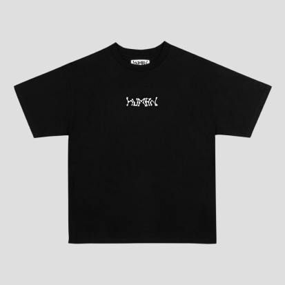
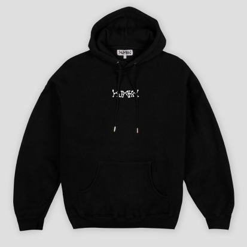
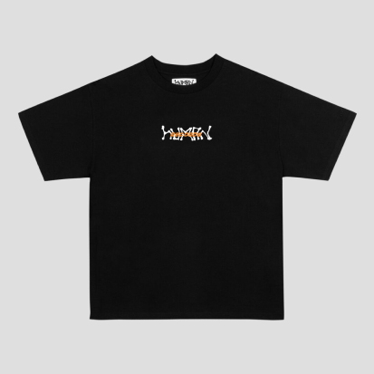
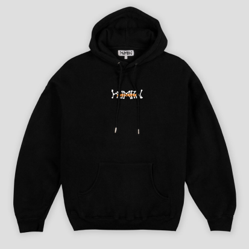
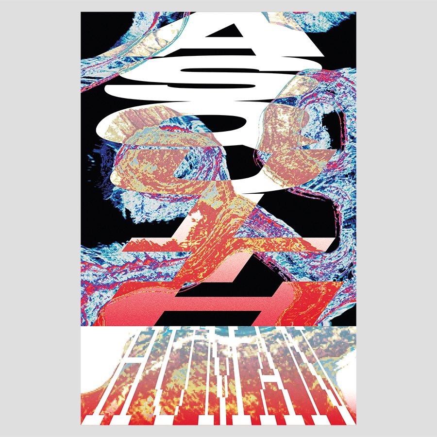
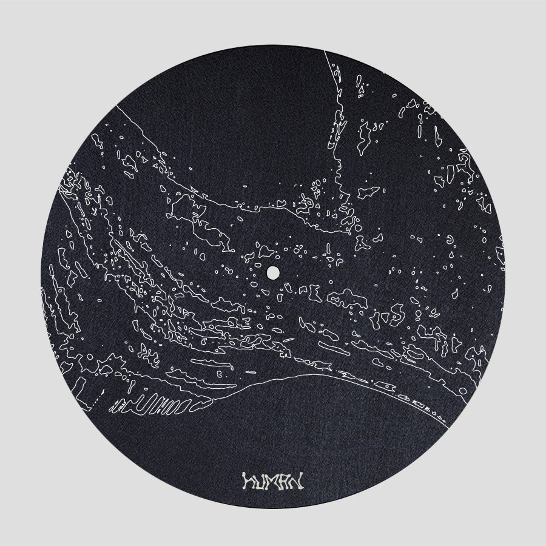
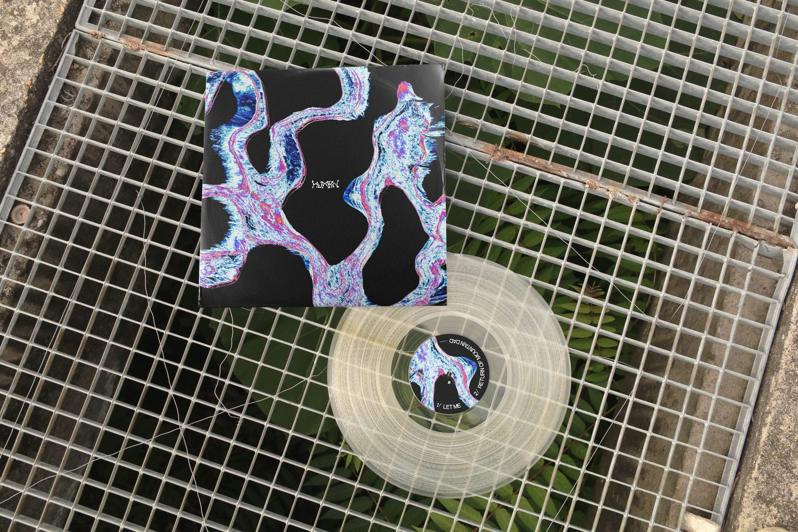
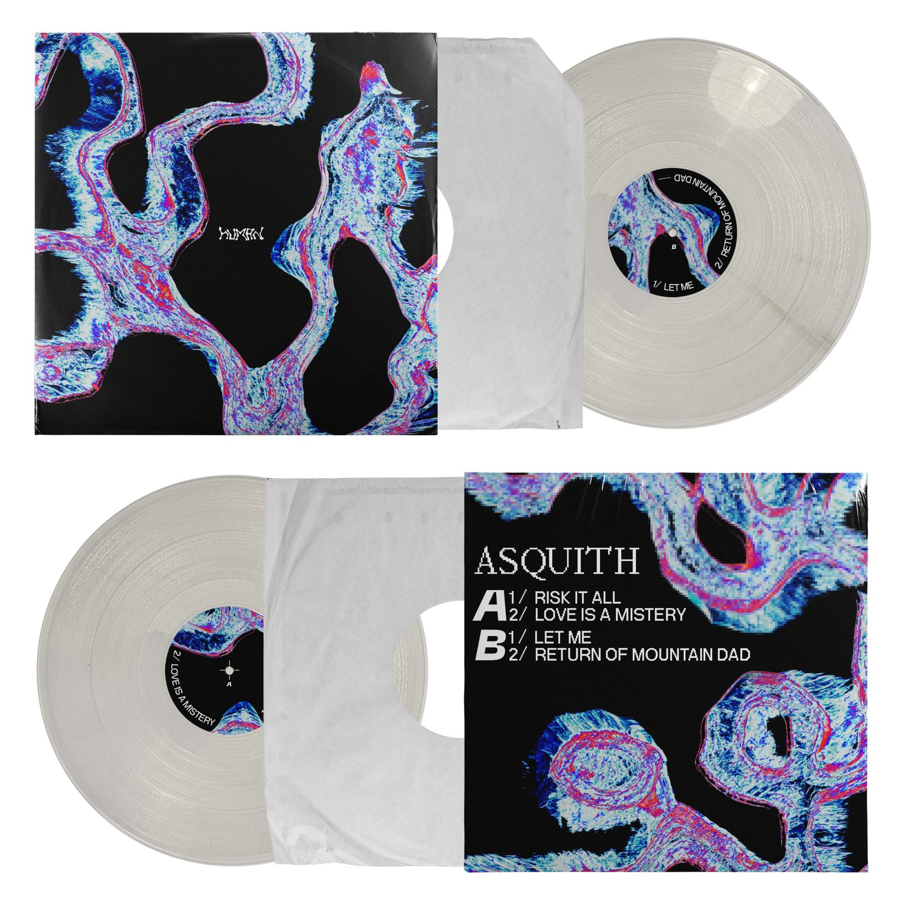

● Design — Identité & merch
Human Record
Human Record est une identité construite autour d'un univers graphique organique et brut : un lettrage « HUMAN » dessiné à la main, décliné sur du merch et sur un packaging vinyle complet pour la sortie du disque « Asquith ».
Le trait irrégulier du logo se retrouve sur les t-shirts et hoodies, en deux colorimétries (blanc et orange), puis prend toute son ampleur sur la pochette du disque : une matière fluide, saturée de bleus, roses et rouges, qui habille la cover, le disque lui-même, le feutrine et l'affiche de la sortie.








